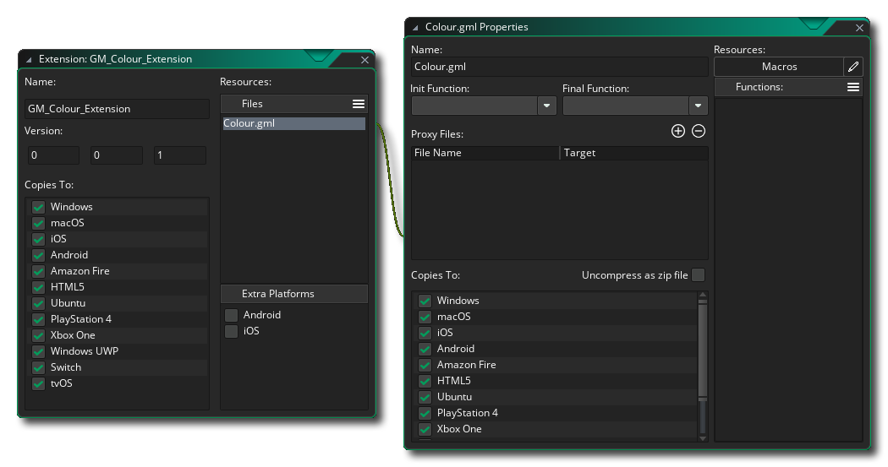

Un package d'extension peut être utilisé pour ajouter un certain nombre de fonctions et de constantes GameMaker langage GameMaker (GML), ou comme un moyen de transférer des ressources de jeu ou même des projets entiers facilement entre les personnes. Si l'extension doit ajouter des fonctionnalités supplémentaires, les fonctions utilisées peuvent lier votre jeu à des SDK externes ou à un code source écrit dans d'autres langues (comme Java pour Android, par exemple), ainsi que GML natif. 
Normalement, les extensions tierces proviennent de GameMaker Marketplace et celles GameMaker vous vous êtes abonné sont alors répertoriées dans la fenêtre de la bibliothèque de Marketplace et peuvent être installées à partir de là, ou en cliquant avec le bouton droit de la souris.  dans le dossier de ressources Extensions et en sélectionnant Ajouter existant de ma bibliothèque. Si vous n'avez pas reçu votre package d'extension du Marketplace, vous pouvez toujours l'ajouter à un projet en cliquant à nouveau sur le bouton droit de la souris.
dans le dossier de ressources Extensions et en sélectionnant Ajouter existant de ma bibliothèque. Si vous n'avez pas reçu votre package d'extension du Marketplace, vous pouvez toujours l'ajouter à un projet en cliquant à nouveau sur le bouton droit de la souris.  le dossier Extensions dans l'arborescence des ressources et cette fois en sélectionnant Ajouter un existant.
le dossier Extensions dans l'arborescence des ressources et cette fois en sélectionnant Ajouter un existant.
Si tu as un *.GMEZ créé avec une version précédente de GameMaker Studio vous pouvez les ajouter en sélectionnant le bouton droit de la souris  option de menu Importer un fichier.
option de menu Importer un fichier.
Pour plus d'informations sur l'utilisation et la création de packages d'extension, consultez les sections suivantes:
Une fois que vous avez ajouté une extension, vous pouvez commencer à l'utiliser dans vos projets, mais vous devez vous assurer que les propriétés de l'extension correspondent à la plateforme cible et modifier les cibles d'exportation pour les fichiers d'extension en fonction des éléments suivants:
- Toutes les cibles: extensions GML. Ce sont des extensions faites en utilisant le langage GameMaker (GML) et sont compatibles avec toutes les plateformes cibles.
- Windows (Standard, UWP, XBoxOne): Vous pouvez utiliser des fichiers DLL Windows (Dynamic Link Libraries).
- Mac OS: la cible Mac OS peut utiliser les fichiers DyLib standard pour les extensions.
- Ubuntu (Linux): Pour la cible Ubuntu, vous devez vous assurer que votre extension utilise des fichiers SO.
- Html5: Ces plateformes peuvent utiliser des extensions JavaScript.
- Android: Cette plate-forme nécessite l'écriture d'une extension Java ou d'un SDK Android Framework.
- iOS: Les extensions pour cette plate-forme sont écrites en Objective C et nécessitent un fichier *.mm et un fichier *.h, ou si vous utilisez un Frameworks, un fichier natif *.a pré-compilé.
- PlayStation: Pour PlayStation 3 ou 4, vos extensions doivent être des fichiers PRX, chaque cible nécessitant une PRX différente pour se conformer aux spécifications de la cible (PS3 ou PS4). Si vous travaillez sur un PSVita, l'extension devrait être SUPRX à la place.
Pour modifier la plate-forme cible pour un fichier d'extension ou un espace réservé spécifique, vous devez d'abord ouvrir les propriétés de l'extension (double-cliquez sur
l'extension dans l'arbre des ressources ou l'utilisation
et sélectionnez Ouvrir les propriétés ), puis une fois dans les propriétés de l'extension, sélectionnez le fichier de ressources à droite que vous voulez éditer:
REMARQUE: Si vous exportez vers la cible macOS ou Ubuntu, vous pouvez définir l'option "Décompresser en tant que fichier zip" pour conserver les autorisations de fichier pour l'extension.
Une fois que vous avez installé votre extension, vous pouvez utiliser ses fonctions et constantes comme vous le feriez avec les fonctions intégrées et les constantes utilisées dans le langage GameMaker. Si votre jeu est multi-plateforme (par exemple, il est conçu pour s'exécuter sur des cibles Windows et Android ), vous devez effectuer une vérification du système d'exploitation avant d'appeler des fonctions spécifiques à l'extension pour éviter les problèmes, par exemple:switch(os_type)
{
case os_android:
call_android_extension_function(x, y, z);
break;
case os_windows:
call_windows_extension_function(x, y, z);
break;
}Notez que pour différentes plates-formes, vos extensions peuvent partager des noms de fonctions, donc si vous avez une extension avec des fichiers distincts pour (par exemple) afficher un message pour Windows et pour Android, les deux fichiers d'extension peuvent partager le même nom de fonction. tous deux mis à exporter uniquement vers leurs plates-formes respectives.
Pour créer une extension, vous devez d'abord faire un clic droit
Pour ajouter un fichier au nouveau poste, vous devez cliquer sur l'icône de menu
et sélectionnez un fichier d' espace réservé ou le fichier réel requis pour la plateforme cible:
Un espace réservé "générique" est un fichier qui peut être de n'importe quel type, sauf ceux requis par les plates-formes spécifiques (donc pas de fichiers DLL ou SO, par exemple), et il ne sera pas utilisé comme fichier "linker" pour connecter un ensemble de fonctions ou de constantes avec l'extension donnée (généralement, il est seulement pour une utilisation avec Android extensions iOS et Android, ce qui est expliqué dans les sections ci-dessous pour ces cibles). Vous pouvez également ajouter des fichiers d'espace réservé "GML" et "JS" pour une utilisation plus spécifique.
Normalement, vous n'aurez pas besoin d'utiliser des espaces réservés à moins de créer pour iOS et Android, vous devrez donc choisir l'option Ajouter des fichiers pour ajouter l'un des fichiers suivants en fonction de la plate-forme cible pour laquelle ils sont:
- .gml: Ceci est un fichier créé uniquement avec le langage GameMaker et est compatible avec toutes les plateformes.
- .js: Ceci est un format d'extension JavaScript et est uniquement compatible avec les modules cible JS (HTML5).
- .dll: Ceci est un format d'extension de bibliothèque à liens dynamiques et est uniquement compatible avec les cibles Windows, UWP et Xbox One (chaque cible aura besoin d'un fichier *.dll différent compatible avec ses spécifications).
- .dylib: Ceci est l'équivalent Mac d'une DLL et est uniquement compatible avec la cible Mac (pas iOS).
- .so: Ceci est l'équivalent Linux d'une DLL et n'est compatible qu'avec la cible Ubuntu (Linux).
- .prx: Ceci est un format de fichier pour ajouter la fonctionnalité PS4 cible (chaque cible aura besoin d'un fichier *.prx différent compatible avec ses spécifications).
Vous remarquerez qu'il n'y a pas de type de fichier pour Android ni iOS, car leur configuration est légèrement différente. Plus bas, vous pouvez trouver des explications sur la façon de les configurer, mais examinons d'abord la création d'une extension GML générale pour toutes les plates-formes cibles, puisque le processus est le même pour toutes.
Pour commencer, vous devez créer le fichier qui va être utilisé. Pour une extension GML, il s'agirait d'un fichier texte (enregistré avec le .gml extension) et serait formaté quelque chose comme ceci:
#define c_alice_blue
return make_color_rgb(240,248,255);
#define instance_create_colour
var i = instance_create_layer(argument0, argument1, argument2);
with (i)
{
image_blend = argument3;
}
return i;Comme vous pouvez le voir, nous commençons chaque section avec un #define appel, qui dans l'exemple ci-dessus est utilisé pour définir deux fonctions. Vous n'avez pas besoin de fournir des champs d'argument pour les fonctions car cela sera ajouté plus tard, utilisez simplement le define puis le nom de la fonction et allez-y et ajoutez le GML pour correspondre. Si vous écriviez une extension DLL ou JS, le processus serait similaire mais dans la bonne langue pour le format du fichier d'extension.
Une fois que vous avez fait cela, vous devez ajouter le fichier à l'extension (expliqué ci-dessus) qui enchaînera une nouvelle fenêtre aux propriétés des extensions pour les propriétés du fichier: 
Ici, vous sélectionnez la plate-forme cible pour l'extension (pour GM vous les sélectionner tous), ainsi que renommer le fichier d'extension et définir quelques autres détails, que nous allons couvrir dans un instant. Tout d'abord, nous voulons ajouter dans nos constantes et fonctions pour que l'utilisateur puisse appeler l'extension depuis son code de projet. Pour cela, vous devez cliquer sur le bouton du menu des extensions
Si vous sélectionnez Ajouter une fonction, vous pourrez alors ajouter une fonction à l'extension qui pourra ensuite être appelée dans GameMaker Studio 2 comme vous le feriez pour l'une des fonctions intégrées. La fenêtre suivante s'ouvre pour vous permettre de définir la fonction dans:
Dans l'image ci-dessus, nous avons rempli l'éditeur de fonction avec les détails de la fonction instance_create_colour que nous avons défini dans notre script d'extension GML (l'éditeur de fonction ne sert pas seulement à définir les fonctions GML et sera le même pour tout autre type d'extension). Vous pouvez voir que nous avons donné un nom à la fonction, ce que vous appelleriez lors de l'utilisation de la fonction dans votre projet, et ce nom ne doit pas correspondre à celui utilisé dans l'extension - vous pouvez le définir comme vous le souhaitez et utilisez ensuite l'option Nom externe pour lier le nom réel défini dans l'extension. Ci-dessous vous avez une section pour définir le texte d' aide, qui est le texte qui sera utilisé dans la fenêtre contextuelle complète du code et le texte d'aide au bas de l'éditeur de code.
Ensuite, vous pouvez définir le type de retour, qui peut être un double (valeur réelle à virgule flottante) ou une chaîne - s'il n'y a rien retourné par la fonction externe alors cela n'a pas d'importance - et sous cela vous définissez les arguments que la fonction prendre.
Enfin, vous ajoutez les arguments (le cas échéant) que la fonction peut prendre. Les arguments peuvent être des doubles ou des chaînes, et vous pouvez les ajouter en cliquant sur le bouton Ajouter.
et supprimez-les en cliquant sur le bouton Supprimer
. Notez que si vous créez une fenêtre Windows dll fichier et il a plus de quatre arguments, tous les arguments doivent être du même type.
Une fois que vous avez fait tout cela, la fonction est prête à être utilisée dans un projet et elle s'affichera automatiquement et sera codée en couleur. Les fonctions définies peuvent également être définies comme Init Functions ou Final Functions, ce qui signifie qu'elles seront appelées automatiquement au début du jeu (Init) et à la fin du jeu (Final).
IMPORTANT! Toutes les plates-formes prennent en charge l'appel de fonction Init, mais toutes les plates-formes n'effectuent pas l'appel de fonction Final. En effet, certaines plates-formes ferment simplement l'application sans donner de préavis ou de temps pour que cette fonction soit appelée. Les plates-formes concernées sont: iOS, Android, HTML5, PlayStation et XboxOne.
L'autre option que vous avez est de créer une macro. Une macro peut être une valeur constante ou un extrait de code unique (pour plus d'informations sur les macros, voir ici ). Par exemple, nous pourrions supprimer la fonction définie de notre exemple d'extension GML ci-dessus pour la couleur c_alice_blue et en faire une macro à la place:L'éditeur est assez explicite - vous donnez le nom de la macro / constante et la valeur, ou une courte ligne de code. Notez que si la macro est une ligne de code, elle sera évaluée à chaque fois que la macro est appelée.
Lorsque vous travaillez avec plusieurs plates-formes cibles, il est important de noter que vous pouvez créer une seule extension avec un seul ensemble de fonctions / macros qui fonctionnera sur toutes les plates-formes. Pour ce faire, ajoutez une seule des bibliothèques de liens à votre jeu en tant qu'extension et placez les autres dans la liste des fichiers proxy à partir de la fenêtre Propriétés de l'extension. Par exemple, disons que vous avez une extension Windows avec le dll "Haggis.dll". Vous devez simplement répliquer cette DLL en tant que Mac DyLib, en l'appelant "libHaggis.dylib" et en vous assurant que les noms de fonctions internes correspondent à ceux de la DLL Windows d'origine. Ce DyLib serait ensuite ajouté dans les fichiers proxy et configuré pour l'exportation lorsque le jeu est exécuté sur la cible Mac, et GameMaker Studio 2 l'utilisera automatiquement lorsque les fonctions d'extension seront appelées.
Pour ajouter un fichier proxy, cliquez simplement sur le
dans la fenêtre Propriétés de l'extension pour l'extension et accédez à l'emplacement du fichier. Une fois qu'il a été ajouté, vous devrez peut-être changer la cible de l'extension pour le module approprié, et lorsque vous lancerez votre jeu, il sera inclus en tant que proxy pour cette plate-forme. Vous pouvez également supprimer des fichiers proxy en cliquant sur
bouton, qui enlèvera le dernier dans la liste à chaque pression.
Une fois que vous avez ajouté vos fichiers proxy, ils seront stockés dans le YYP de votre jeu, dans le dossier Extensions (vous pouvez les trouver facilement en cliquant avec le bouton droit
Il est très important que vos fichiers proxy suivent les conventions de nommage listées ci-dessous, car GameMaker Studio 2 analysera ces noms et affectera le module cible au fichier en fonction de son extension et de son nom et liera automatiquement les fichiers à votre place. Si vous ne respectez pas ces conventions, votre jeu ne fonctionnera peut-être pas au moment de l'exécution, car GameMaker Studio 2 ne pourra pas déterminer quel fichier utiliser ou ne chargera pas le fichier correctement.
Les conventions de dénomination pour chaque plate-forme cible sont indiquées ci-dessous:
Plate-forme Des noms les fenêtres <Nom>.dll. Linux <Nom>.so, lib <Nom>.so, <Nom> _linux.so, lib <Nom> _linux.so Mac OS X <Nom>.dylib, lib <Nom>.dylib HTML5 <Nom>.js PS4 <Nom>.prx, lib <Nom>.prx, <Nom> _ps4.prx, lib <Nom> _ps4.prx Xbox One <Nom> _xboxone.dll En utilisant les conventions ci-dessus, vous permuteriez la partie <Nom> pour le nom du fichier de base pour lequel vous ajoutez les fichiers proxy.
Pour créer une extension pour Android vous devez le faire en deux parties. La première partie serait d'ajouter l'extension elle-même, avec les fichiers requis etc... et la seconde est de créer les fonctions et les macros / constantes que l'extension nécessite. Les fonctions et les constantes sont ajoutées à l'aide de fichiers d' espaces réservés pour les regrouper. Vous devez donc ajouter un espace réservé, puis définir les fonctions et les macros comme expliqué dans la section ci-dessus. Pour ajouter le reste des fichiers, vous devez d'abord cocher la case Android dans la section Fonctions supplémentaires de l'éditeur:
Ici vous donnez les détails suivants:
- ClassName: Votre extension peut avoir plusieurs classes, chaque classe ayant ses propres fonctions et constantes, vous devriez donc lui donner un nom qui reflète son but.
- Autorisations Android: vous pouvez ajouter ici toutes les autorisations supplémentaires requises par votre extension. Ces autorisations dépendent entièrement de l'utilisation de l'extension. Vous devez donc vérifier la documentation fournie par Google pour la Android forme Android ou, si vous utilisez un kit SDK tiers, la documentation fournie avec le SDK. Pour ajouter une nouvelle autorisation, vous devez cliquer sur
- Inject To Gradle Dépendances: Ici vous pouvez ajouter n'importe quel code supplémentaire qui doit être injecté (ajouté) dans les dépendances de construction Gradle.
- Injecter au manifeste Manifest.xml d' Android: Ici, vous définissez un code supplémentaire à injecter (ajouté) dans le fichier XML du manifeste Android lorsque votre jeu est conçu pour être testé ou mis à jour. Assurez-vous de bien le réviser (ainsi que vos autorisations) avant de soumettre des jeux au magasin, car des paramètres incorrects entraîneront l'échec de la soumission de votre jeu.
- Injecter à Android Manifest.xml Application: Ici, vous définissez tout code supplémentaire à injecter (ajouté) dans le fichier XML du manifeste Android sous l'en-tête de l'application lorsque votre jeu est construit pour les tests ou la version finale. Assurez-vous de bien le réviser (ainsi que vos autorisations) avant de soumettre des jeux au magasin, car des paramètres incorrects entraîneront l'échec de la soumission de votre jeu.
- Injecter à Android Manifest.xml RunnerActivity: Ici, vous définissez tout code supplémentaire à injecter (ajouté) dans le fichier XML du manifeste Android sous l'en-tête RunnerActivity lorsque votre jeu est conçu pour être testé ou être publié. Assurez-vous de bien le réviser (ainsi que vos autorisations) avant de soumettre des jeux au magasin, car des paramètres incorrects entraîneront l'échec de la soumission de votre jeu.
Une fois que vous l'avez configuré correctement, vous devez ajouter les fichiers requis pour que votre package d'extension fonctionne. Pour ce faire, vous devez cliquer sur les boutons en bas, Ajouter un SDK ou Ajouter une source, puis parcourir les fichiers que vous souhaitez ajouter. Les fichiers ajoutés seront stockés dans le répertoire Android Source avec votre extension. Vous pouvez ouvrir cet emplacement à tout moment en cliquant avec le bouton droit de la souris
Pour plus d'informations sur la création d'extensions Android, consultez la base de connaissances YoYo Games.
Pour créer une extension pour iOS, vous devez le faire en deux parties. La première partie serait d'ajouter l'extension elle-même, avec les fichiers requis etc... et la seconde est de créer les fonctions et les macros / constantes que l'extension nécessite. Les fonctions et les constantes sont ajoutées à l'aide de fichiers d' espaces réservés pour les regrouper. Vous devez donc ajouter un espace réservé, puis définir les fonctions et les macros comme expliqué dans la section ci-dessus. Pour ajouter le reste des fichiers, vous devez d'abord cocher la case iOS dans la section Fonctions supplémentaires de l'éditeur:
Ici vous donnez les détails suivants:
- Indicateurs de lieur / drapeaux de compilateur: Certains frameworks et SDK tiers requièrent l'ajout de drapeaux de lieur et d'indicateurs de compilation supplémentaires qui peuvent être spécifiés ici (voir la documentation qui accompagne le SDK ou le framework en question pour plus de détails).
- ClassName: Votre extension peut avoir plusieurs classes, chaque classe ayant ses propres fonctions et constantes, vous devriez donc lui donner un nom qui reflète son but
- System Frameworks: Ici vous pouvez ajouter des frameworks de système iOS à votre extension. Ceux-ci sont ajoutés en cliquant sur le
- Injecter à Info.plist: Ici vous pouvez ajouter n'importe quel code pour être injecté dans le info.plist fichier.
- Trames et ensembles tiers: cette section est destinée à l'ajout de trames tierces et de kits SDK. Comme avec le cadre du système fonctionne, vous cliquez sur le
Si des cadres système ou des cadres tiers ont été ajoutés à votre extension, ceux-ci seront désormais répertoriés dans la fenêtre Propriétés de l'extension, chacun ayant une case à cocher en regard. Si vous cochez la case, vous activez la liaison faible, ce qui est utile si vous avez besoin de "remplacer" un symbole de la bibliothèque incluse avec votre propre valeur, mais il est à noter que cela ralentira la liaison.
Pour plus d'informations sur la création d'extensions iOS, consultez la base de connaissances YoYo Games.


YoYo Games Extensions tierces
Les versions GameMaker de GameMaker nombreuses fonctionnalités tierces, mais elles étaient inefficaces et difficiles à maintenir, car si une fonctionnalité spécifique était modifiée par la tierce partie, l'ensemble de l'EDI et de l' GameMaker exécution de GameMaker devait être mis à jour. Ainsi, les versions actuelles ont adopté l'utilisation de packages d'extensions pour ajouter un support tiers à vos jeux. Cela signifie que vous ne pouvez ajouter que les fonctions supplémentaires dont vous avez besoin et que vous pouvez même les adapter et les modifier en fonction de vos besoins spécifiques.
La plupart de ces extensions seront téléchargées et installées pour vous lorsque vous sélectionnez une option de jeu spécifique (comme Facebook ou Google Ads par exemple), mais vous pouvez trouver plus d'informations à leur sujet dans les articles suivants YoYo Games la base de connaissances YoYo Games:
Vous pouvez trouver les extensions elles-mêmes à partir de la page Marketplace suivante:
Notez que ces extensions sont livrées avec une démo et un fichier d'aide qui explique comment les utiliser, et en tant que telles, leurs fonctions ne sont pas couvertes dans le manuel.